Technology . Programming
Python SyntaxError: Unexpected EOF While Parsing - Solution Guide
Published on March 2, 2026 by Goddy Ora
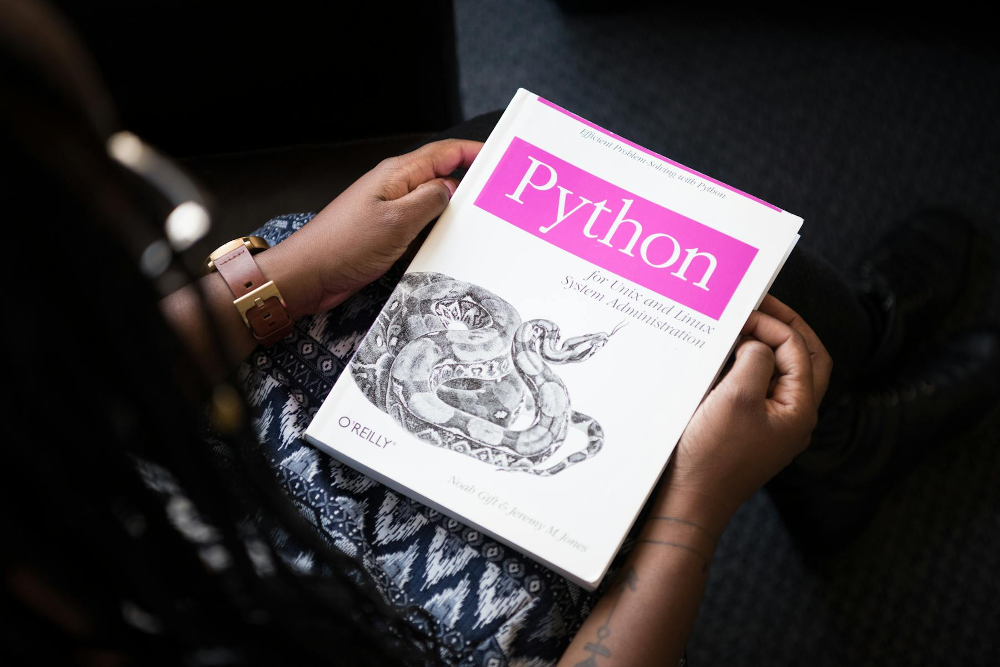
Have you spent a significant amount of time working on your Python code, only to keep seeing this message every time you hit Run: SyntaxError: unexpected EOF while parsing? Don't panic. This guide covers the most common causes of this error and how to fix each one quickly.
Python is strict about syntax. When your code format is incomplete or malformed, Python raises a SyntaxError. The unexpected EOF variant appears when the interpreter reaches the end of your file before a code block has been properly completed. EOF stands for End of File.
The most common causes are:
- Incomplete
ifor loop statements - Missing parentheses or too many parentheses
- Using
trywithout an accompanyingexceptorfinallyblock - Executing code line by line in the Python console when a full block is required
1) Incomplete If or Loop Statements
if statements and loop statements such as for and while require at least one valid instruction in their indented block. If you end a loop or condition without a body, Python raises SyntaxError: unexpected EOF while parsing.
For example, this incomplete loop will fail:
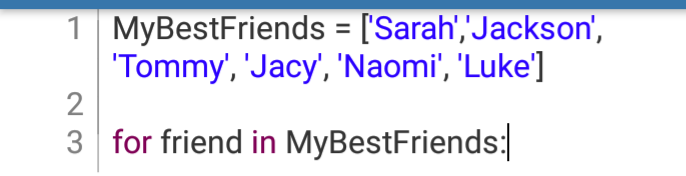
Terminal result:
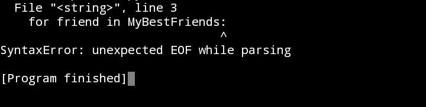
To fix it, add a valid line under the loop, such as a print() statement:
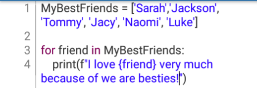
Terminal result:
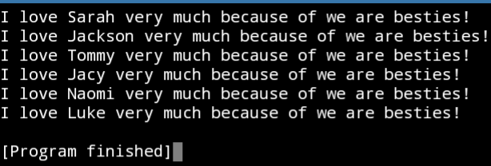
The same issue occurs with incomplete if/else blocks:
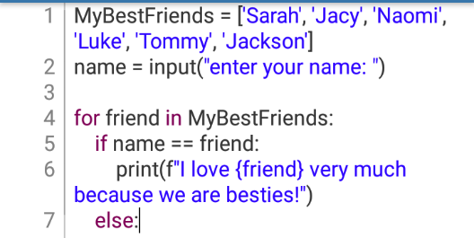
Terminal result:
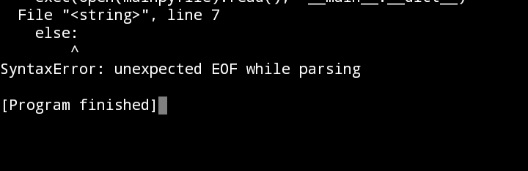
Add the missing instruction inside else (or if) and run again:
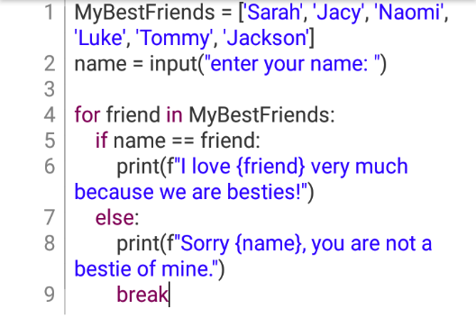
Terminal outputs:
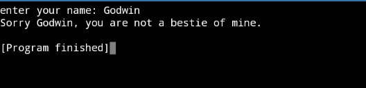
Application of the pass Function
If you do not yet know what logic to add to an if or loop block, use pass as a temporary placeholder. It prevents syntax errors and allows your program structure to run while you continue building the final logic.
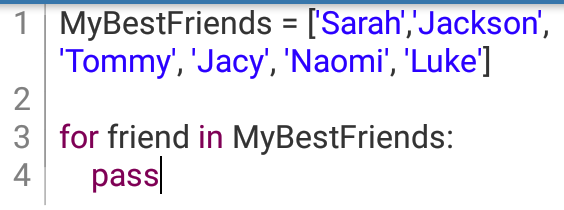
Terminal result:
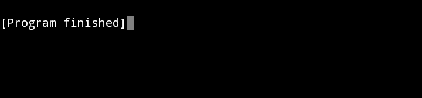
2) Missing Parentheses or Too Many Parentheses
If parentheses are unbalanced, Python may throw an unexpected EOF error. This can happen when a closing bracket is missing, or when extra brackets are added accidentally.
Example with extra parentheses:
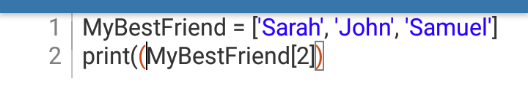
Terminal result:
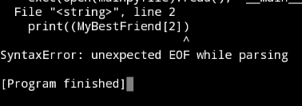
Corrected code:
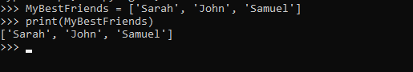
The same error can appear when a closing parenthesis is missing:
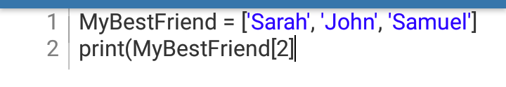
Terminal result:
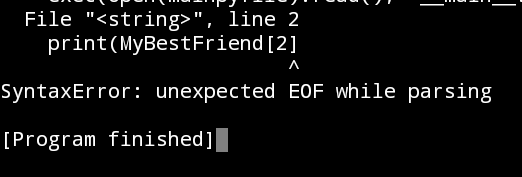
Always trace the error line, then check for missing or extra parentheses. The same debugging logic also applies to brackets [] and braces {}. Using IDEs with syntax highlighting and linting (such as PyCharm) can help you catch these issues faster.
3) Using try Without except or finally
try/except blocks are used for exception handling. Python executes the try block first, then moves to except if an error condition is triggered. If you write try by itself and omit the required continuation block, Python raises the EOF parsing error.
Example of incomplete try usage:
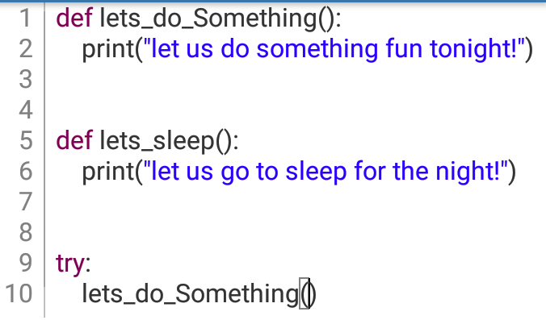
Terminal result:
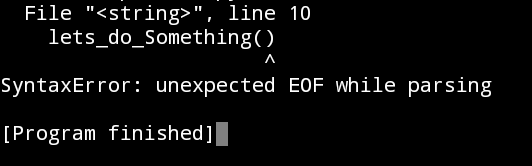
Solution with except:
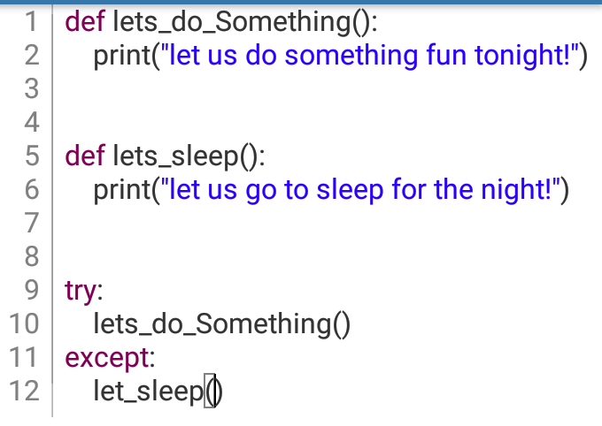
Terminal result:
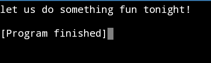
Alternative solution with finally:
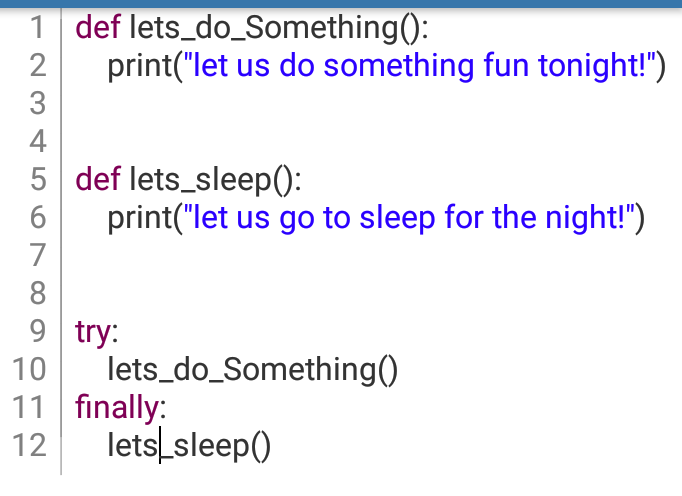
Terminal result:
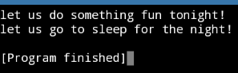
Both approaches resolve the syntax error, but they serve different runtime behaviors.
4) Executing Code Line by Line in the Python Console
This usually happens when someone runs a block statement line by line instead of entering the full block. Single-line statements run fine, for example:
>>> a = 3
>>> print(a**3)
Terminal>>> 27But block statements (such as loops) fail if you enter only the first line:
>>> for i in range(5):
^
Terminal>>> SyntaxError: unexpected EOF while parsingTo avoid this, enter the complete block before execution:
>>> for i in range(5):
... print(i, end=', ')
Terminal>>> 0, 1, 2, 3, 4,Once the loop body is included, the error disappears.
Final Conclusion
The SyntaxError: unexpected EOF while parsing message appears when Python reaches the end of your program before all statements are fully and correctly closed.
To fix it, check for incomplete if or loop blocks, mismatched parentheses/brackets/braces, unfinished try blocks, and partial block execution in the console. If you run through those checks in order, you can usually resolve this error quickly and confidently.